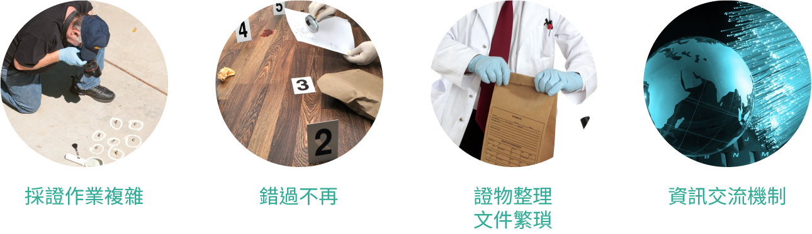
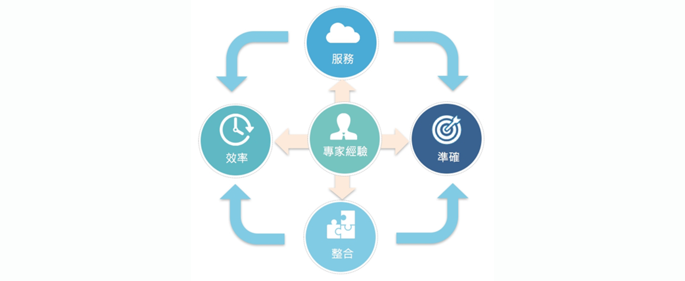
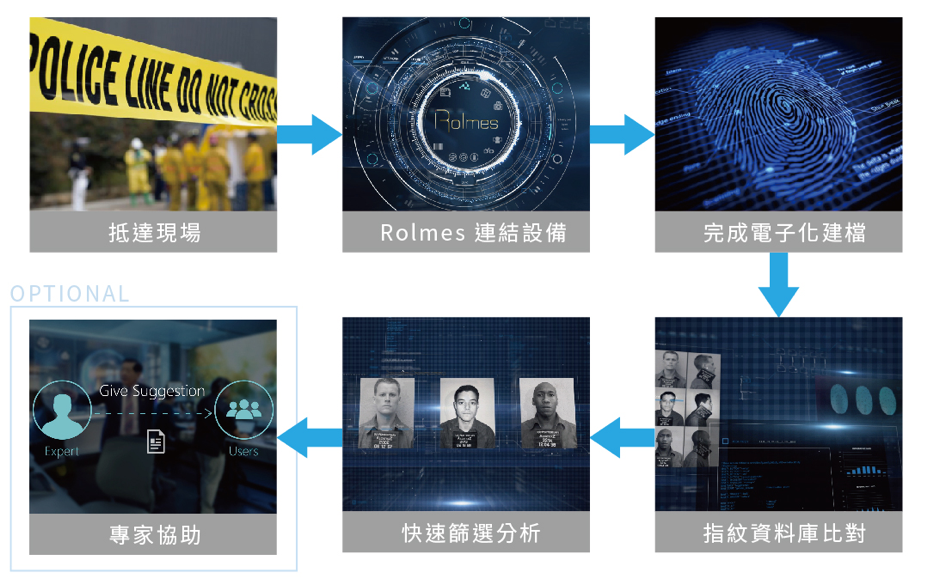

機器警探
針對犯罪調查領域，開發一革命性的智慧型資訊系統
美商西思艾股份有限公司 開發
機器偵探福爾摩斯 (Robotic Holmes)
隨著社會發展，人口數提高且犯罪率攀升，傳統的偵查手法已不堪負荷，尤其鑑識科學儼然受到極高的重視與依賴，已被視為犯罪偵查重要環節。而現場採證是犯罪偵查中最重要的環節之一，不恰當的現場處理將影響證據品質，導致無效偵查與錯誤判決的風險增加。
在現場的偵查警員與實驗室的鑑識人員，業務量都已超標，在案件應接不暇的此時，迫切需要解決下列四大問題:
Rolmes 機器偵探福爾摩斯，針對犯罪調查領域，開發一革命性的智慧型資訊系統，提高蒐證正確率及便利性，協助改變當前的犯罪偵查方式。如何在案件偵查的過程中，更有效率、更正確地蒐集證據，並縮短分析時間，即時鎖定案件偵查的方向為未來發展及努力之目標。
每一個犯罪現場都有其獨特性，採集證據則是案件偵查中最重要的環節，而調查蒐證的機會卻只有一次。現有情況為偵查人員於犯罪現場蒐證時會有重點證據遺漏亦或是採集不完整之情形，此情形可能導致破案進度甚至偵查結果 ; 因此如何協助偵查人員在千頭萬緒的現場中，有條不亂地遵照標準的程序作業，取得正確且有效的證物，做為後續偵查辦案的參考 ; 以及提供在法庭上，足以將犯罪嫌疑人定罪或開釋的重要依據 ; 如何避免偵辦人員因其受過的訓練或是經驗的不同而導致的人為盲點或疏失為此研究之一大重點。
李昌鈺博士提到：『通常一個案件第一個24小時最重要，鑑識人員需要所有的資料，現在因為提取物件送到鑑識中心需要很長時間，而失去很多先機，Rolmes system提供了理想的方法，以結合所有經驗、資料及實務。』
Rolmes提供現場人員在蒐集證物時所必要的指引，透過系統與人員的互動，建議蒐集證物的方式，以及列舉案件可能的偵查方向，將犯罪現場偵查與鑑識科學領域的專家經驗緊密結合，期望能協助犯罪現場偵查人員與實驗室鑑識人員以最有效率的方式採集到最正確的證據，並做出作精準的鑑識報告
藉由Rolmes的協助
鑑識人員可於現場直接操作特定裝備將指紋攝影，並立即完成電子化建檔，系統即時進行指紋資料庫比對，快速篩選分析在犯罪現場最可能出現的人員，警力即可於第一時間投入於較關鍵的偵辦調查項目。當特殊的重大案件發生時，Rolmes特有的專家諮詢功能，可即時上傳案件相關的資訊給遠端的專家，即時連線並進行討論，快速地取得必要的協助與指示。
安全是人們對於生命的基本要求，有鑑於犯罪手法隨著科技的進步也不斷演化，大型的恐怖攻擊與智慧型犯罪層出不窮；執法單位對於案件的偵防需要投入更多的心力，應用更多的科技輔助，方能在案件偵查的過程中，更有效率、更正確地蒐集證據，並縮短分析時間，即時鎖定案件偵查的方向。
Rolmes Concept Video / OCT. 07,2015
Rolmes Concept Video / may, 31,2016
電腦圖學
重現犯罪現場之場景並建置平面圖演算法
巨量資料分析
結合機器學習模型，萃取資料關聯性，建構犯罪資料探勘平台
災害防救自動化
針對大型災害在短時間內，提供高品質的決策與自動程式設計
機器警探
針對犯罪調查領域，開發一革命性的智慧型資訊系統